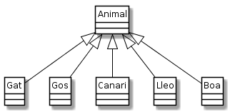

Classes abstractes¶
A una jerarquia de classes, es pressuposa que la superclasse és més abstracta que la subclasse. Sovint recollim els elements comuns d’unes classes i els agrupem en una superclasse.
Considera el següent exemple:
1 2 3 4 5 6 7 8 9 10 11 12 13 14 15 16 17 18 19 20 21 22 23 24 25 26 | class Animal {
/* … */
public Animal(String nom){ /* … */ }
public String comEtDius(){ /* … */ }
public void aixecat(){ /* … */ }
public void estirat(){ /* … */ }
public void seu(){ /* … */ }
public boolean estàsDret(){ /* … */ }
public boolean estàsEstirat(){ /* … */ }
public boolean estàsAssegut(){ /* … */ }
public void menja(Menjar){ /* … */ }
public void fesSoroll(){ /* … */ }
}
class Gat extends Animal {
/* … */
@Override
void fesSoroll() { /* … */ }
void miola() { /* … */ }
}
class Gos extends Animal {
/* … */
@Override
void fesSoroll(){ /* … */ }
void borda(){ /* … */ }
}
|
La classe Animal agrupa els elements comuns dels gats i dels gossos. A l’exemple, tots
els animals, tant gats com gossos, ens permeten demanar-los que es posin drets i que
mengin un determinat menjar.
Fixa’t que d’aquesta manera ens estalviem de definir tots aquests mètodes a les diferents
subclasses d’animal. Únicament ens caldrà definir els elements particulars. Per exemple,
la classe Gat podria definir el mètode void fesSoroll() de la següent manera:
public void fesSoroll() {
miola();
}
A l’exemple dels animals, té sentit instanciar un Gat o un Gos. En podem fer coses amb ells com, demanar-los el seu nom, que s’aixequin, que mengin, que miolin, bordin (o més general, que facin soroll).
Ens podem imaginar quin serà el soroll d’un gat o d’un gos, però, com serà el soroll d’una
instància d”Animal?
Quan la raó principal de crear una classe és per actuar com a agrupador d’elements comuns de les seves subclasses, però no es pretén que existeixin instàncies d’aquesta classe, aquesta classe li diem classe abstracta.
D’una classe abstracta no es poden fer instàncies, però poden contenir qualsevol dels
elements que una classe «normal» tingui permès. A més a més, pot fer servir el modificador
abstract per a indicar mètodes que han de ser implementats per les subclasses.
Considerem ara el clàssic exemple de les figures geomètriques.
1 2 3 4 5 6 7 8 9 10 | class Figura {
/* …˙*/
public double getÀrea() { /* … */ }
public double getPerímetre() { /* … */ }
}
class Quadrat extends Figura { /* … */ }
class Triangle extends Figura { /* … */ }
class Cercle extends Figura { /* … */ }
class Rectangle extends Figura { /* … */ }
|
Les figures geomètriques, com ara cercles, quadrats, triangles…, tenen alguns elements
en comú. Per exemple, totes elles ocupen un àrea i se’ls pot mesurar el perímetre. En
paraules de la POO, totes les figures disposen de dos mètodes: double getArea() i
double getPerimetre() que retornen respectivament l’àrea i el perímetre corresponents
a la figura.
És a dir, les classes Cercle i Rectangle serien subclasses de la classe
Figura. Ara bé, com calculem l’àrea d’una instància de la classe Figura? No té
sentit, oi? Per tant, segons la definició anterior, seria adequat implementar la classe
Figura una classe abstracta.
La implementació de la classe Figura vindria a ser quelcom similar a:
1 2 3 4 | public abstract class Figura {
public abstract double getArea();
public abstract double getPerimetre();
}
|
Fixa’t en l’ús del modificador abstract als diferents mètodes. A més a més,
aquests mètodes abstractes no tenen cosh
La implementació de la classe Cercle podria ser:
1 2 3 4 5 6 7 8 | public class Cercle extends Figura {
private double radi;
public Cercle() { radi = 1.0; }
public Cercle(double radi) { this.radi = radi; }
public double getArea() { return Math.pow(getRadi(), 2) * Math.PI; }
public double getPerimetre() { return 2 * Math.PI * getRadi(); }
public double getRadi() { return radi; }
}
|
Fixat en que l’herència s’indica exactament igual que amb una superclasse no abstracta, o també anomenada concreta.
Una subclasse d’una classe abstracta pot ser també abstracta. Simplement cal no implementar algun dels mètodes de la superclasse.
Exercici 1. ☼ La jerarquia d’animals¶
Finalitza la implementació de la jerarquia d’animals que apareix a l’inici d’aquesta pàgina.
La major part del codi ja la tens definida a exercicis previs del Gat Renat.
Vols fer que l’exercici sigui una mica més interessant? Construeix-te els jocs de prova. Bàsicament els has d’adaptar respecte a aquells que ja has fet servir pel Gat Renat.
Exercici 2. Figures¶
Implementa les classes Figura, Quadrat, Rectangle, Cercle i
TriangleRectangle.
Aquestes subclasses oferiran únicament constructors específics que permetin especificar les dimensions de cada figura:
- Quadrat: costat
- Rectangle: base, altura
- Cercle: radi
- TriangleRectangle: base, altura
Cada figura oferirà un constructor específic amb les dimensions anteriors, així com
mètodes get per a poder consultar-los (ex. double getCostat().
Nota: si et passa pel cap, venç la temptació de fer Quadrat una subclasse de Rectangle (recorda el principi de Liskov)
Disposes de proves per a aquest exercici.
Exercici 3. Uns altres animals¶
En aquest exercici desenvoluparem una nova jerarquia d’animals. És nova perquè no podrem fer servir pràcticament res del que ja teníem a altres exercicis.
Desenvolupa la següent jerarquia d’animals representada en UML:

És a dir, implementa la classe Animal amb les subclasses Gat,
Gos, Canari, Lleo i Boa.
La classe Animal és abstracta i ofereix els mètodes i constructors següents:
Animal(String nom)permet inicialitzar l’animal amb un nom.String comEtDius()retorna el nom de l’animalString moute()s’implementa amb el següent codi:public String moute() { return fesSoroll() + " " + camina(); }
String camina(): tots els animals d’aquest exercici fan «tap tap tap» en caminar.String dorm(): tots els animals d’aquest exercici fan «zzz» en dormir.String fesSoroll(): és un mètode abstracte que cada classe d’animal haurà d’implementar. Més endavant s’indica la sortida que s’espera per cada animal.
Les subclasses implementen un mètode específic per fer soroll. Per exemple, la
classe Gat implementa el mètode String miola() que retorna «meeu».
Aquest és el mètode que crida el mètode fesSoroll().
La següent taula descriu, per cada subclasse, quin és el métode específic i quin soroll fa.
| classe | mètode específic | soroll |
|---|---|---|
| Gat | miola() | meeu |
| Gos | borda() | bof bof |
| Canari | piula() | piu piu |
| Lleo | rugeix() | grr grr |
| Boa | xiuxiueja() | xiu-xiu |
Important
Fixa’t que Animal té un mètode concret que crida a un mètode abstracte, que
haurà de ser implementat per les subclasses. Cap problema per Java. Quan aquest mètode
pugui ser cridat, voldrà dir que hi ha una instància d’una subclasse de Animal que
sí implementa el mètode String fesSoroll().
En el paquet de suport paquet de suport hi trobaràs, a més dels tests que
pots executar a partir de TestSuite.java, el programa UsaAnimals.java i
el fitxer sortidaesperada.txt.
Assegura’t que el teu codi, a banda de passar les proves de TestSuite, també
generen exàctament la sortidaesperada.txt en executat UsaAnimals.
Ref. 20.1.7